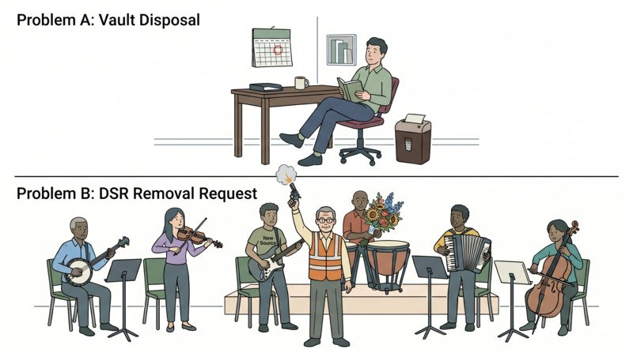

The complexity of an erasure request is the same as the complexity of routine analytical removal: find the subject, remove what identifies them, leave the rest intact. The difference is whether the platform was built before the request arrived. The architecture that handles routine removal well also handles erasure well, because the underlying technical operation is the same.
Papers 1 and 2 built the case and the architecture. This paper proves the architecture holds under the hardest test it will face.
Hard Mask is a permanent, one-way transformation of identifying fields, approved by privacy and legal. The record stays. The subject is forgotten. Hard mask answers a privacy obligation: it is what an erasure request actually requires the platform to do. Analytics is not the vault, and the analytical store is not exempt from this obligation.
Remove is the retirement of data from the analytical environment when it no longer has active use. Remove is triggered by platform monitoring and domain-owner authorization, not by a privacy request. The vault is not involved. Remove answers an operational lifecycle question, not a privacy one.
The two operations share infrastructure but not intent.
A note on Step 5: hard mask is not complete until the change logs that enable time-travel access are cleared. Both steps are required: overwriting the field and clearing the history that would let someone reconstruct it.
Hard masking is the operation. Whether triggered by lifecycle policy (data no longer in active use) or by subject request (consent revoked, erasure asked for), the platform does the same thing: identifying fields overwritten, the change propagated through the layers, history cleared. Same tool. Same audit trail.
What varies by organization is how hard the tool is to point at the right rows. Three platform conditions decide that.
Is there a canonical record for the subject? An analytical environment that keeps a single canonical entity per subject (one row, one place, one system-of-record for who that person is) has a target to aim at. An environment that materialized identity into a hundred derived tables, each with its own copy of the subject's identifying fields, does not. The first removes a subject by changing one row and letting it propagate. The second runs a search operation across the whole graph.
Is the graph mapped? A canonical record is necessary but not sufficient. The platform also needs to know where that record's identity appears downstream: which Silver tables joined to it, which Gold data products carried it forward, which features are derived from it. A data catalog with subject-level lineage answers this directly. Without one, locating every relevant row may require manual investigation, table by table. Building out catalog and lineage capability does not have to be finished first. But it has to move in parallel, at the same priority as the architecture build, or the three conditions will not hold when the first serious request arrives.
Does data flow upward, or is it materialized independently? Bronze is the closest layer to the canonical record. If Silver is built from Bronze on a recurring cadence, and Gold from Silver, then a hard mask applied to the Bronze canonical record propagates upward on the next run. The change is made once. If, instead, Silver and Gold are independently materialized from source (because someone needed faster access) the change has to be made at every layer separately, and the platform has to track which copy is authoritative.
The platform answer to all three is: build the canonical record, build the catalog, build the upward flow. The organizational answer is harder, because these decisions span data engineering, master data management, and governance. They do not get solved by buying tools. They get solved by committing, on Day Zero, to a single canonical entity model, even if its implementation matures over time. Without that commitment, the analytical store accumulates parallel identity definitions that are expensive to reconcile later.
When those three conditions hold, lifecycle and DSR converge on the same technical operation, even though they remain distinct compliance workflows. The audit trail for a DSR is not the same as the audit trail for a routine lifecycle removal. The documentation, the timing, and the evidence requirements differ. But the masking change applied to the data is the same. Lifecycle says: this subject's records are no longer in use, hard mask them. DSR says: this subject withdrew consent, hard mask them. Same change, same propagation. The only thing different is what initiated the request.
The lifecycle arc is what the architecture buys you. The vault holds the authoritative record for the full regulated period. Bronze, Silver, and Gold hold what active analytical work requires. Only that. Identifiers thin out as data moves outward from source. By the time an erasure request arrives for a subject who hasn't appeared in an active use case for two years, the platform has already done most of the work.
That is the payoff of Papers 1 and 2. When the masking standard is agreed, the canonical record exists, the graph is mapped, and data flows upward through the layers: a DSR is not a special event. It is the same engine, pointed at a different trigger. A vendor exit works the same way. A consent lapse works the same way. The platform does not need a separate process for each. It needs one well-built process that different obligations can invoke.
The three papers describe an architecture. The architecture does not run on platform decisions alone. Retention floors are set by Legal and Compliance. The identity removal standard is owned by Privacy and Legal. Analytical retention decisions belong to Privacy and the domain data owner. The platform monitors usage and executes the lifecycle. Domain owners authorize removal. Compliance and Platform together produce the audit evidence. Privacy sets the standard for what that evidence has to show.
None of these are mandates from the platform team. They are shared decisions. The table below shows who should care most about each one. Not as an org chart, but as a starting point for the conversations that make the framework real.
| Decision | Who Should Care Most |
|---|---|
| Retention floor — how long the vault holds the record | Legal / Compliance |
| Identity removal standard — what counts as hard masked | Privacy + Legal |
| Analytical retention — how long Bronze, Silver, and Gold data stays | Privacy + Domain data owner |
| Usage telemetry review — when a use case is declared dormant | Platform engineering |
| Final purge authorization — who approves removal from Bronze, Silver, and Gold | Domain data owner |
| Audit evidence: logged and retained for DSR and lifecycle events | Compliance + Platform engineering (Privacy sets the standard) |
| Model | Claude Sonnet 4.6 — 2026-05-12 |
| Version | v6.0 — Final editorial pass; series complete |
| Session | 2026-05-12 — DL-S12 |
| Audience | Cross-functional leadership (legal, compliance, data engineering, analytics) — LinkedIn series |
| Sources | The Author's original Analytical Data Lifecycle whitepaper (April 2026); external review: Gemini, ChatGPT, Perplexity; editorial decisions approved by author across sessions DL-S01 through DL-S12. |
| Decision / Action | First official published version. Publish one paper per week beginning with Paper 1. |
| Iteration Notes | v6.0: Final banned-pattern pass (DL-S12). Removed unsupported frequency claim (P1); removed "data minimization" label (P2); replaced metaphorical "data landscape" (P2); sharpened closing question (P2); removed contraction (P3). Version number unified across series at v6.0. |
| Assumptions | Images served via Google Drive thumbnail URLs. Publishing via GitHub Pages. |
| Scope Exclusions | Does not cover implementation playbook, vendor selection, or regulatory legal advice. |
| Tool Chain | Claude only — drafting, editing, HTML production across DL-S01 through DL-S12. |
| Review Status | Accepted — ready to publish. |